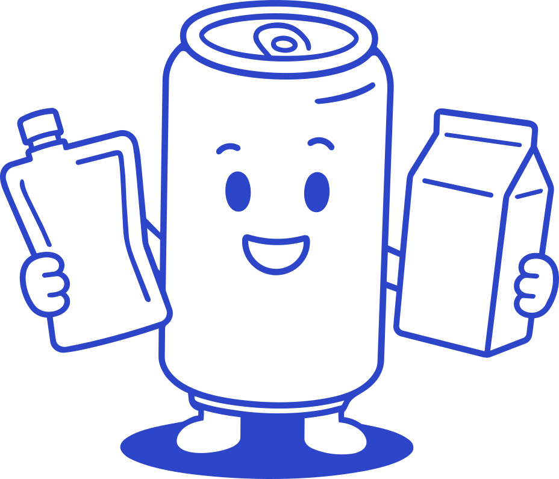
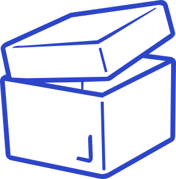
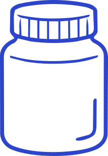
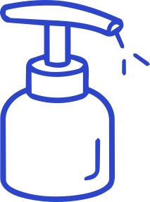
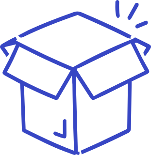
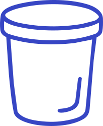
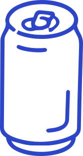
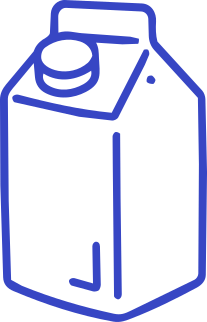

Pouch, tin, jar, carton or bottle. The format you choose is one of the biggest levers for standing out, and one of the first decisions that shapes cost, sustainability and the whole design.

Format is a branding decision, not just a container.
Before a single graphic is drawn, the structure sends a message. A heavy glass jar says craft and quality; a stand-up pouch says modern and convenient; a tin says gift and keepsake. The right format can make a product unmistakable on shelf, and the wrong one can make a good brand invisible. Choose it early, with the designer, because it changes everything downstream: artwork, dielines, print method, shelf presence and unit cost.







A distinctive silhouette or structure is recognised from across the aisle, before any graphic is read. Shape is a brand asset.
Weight, texture and finish communicate quality instantly. Tactility is something a screen cannot copy and a competitor cannot fake cheaply.
When everyone uses the same pack, a considered switch (a tin in a pouch category, glass in a plastic one) makes a brand unmistakable.
Format drives environmental impact more than anything on pack. Mono-material, recycled content, refills and right-sizing all start here. Make any eco claim specific and honest.
What wins on a supermarket shelf is not always what survives an e-commerce courier. Sell online, design for protection and the unboxing; sell in store, design for the block and the glance.
The studios in our directory handle structural design and knifeline creation, not just graphics. Find one, or start with an expert read.
Find a designer Request a Review